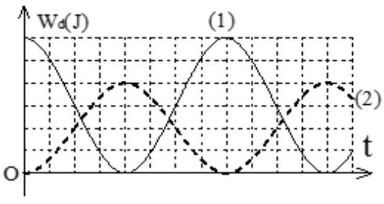
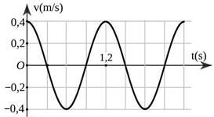

PHẦN I. Câu trắc nghiệm nhiều phương án lựa chọn
Mỗi câu có 4 phương án, chỉ chọn một đáp án đúng (0,25 điểm).
1
Một vật nhỏ thực hiện dao động điều hòa theo phương trình $x = 10\cos(4\pi t + \pi/2)$ (cm) với t tính bằng giây. Động năng của vật đó biến thiên với chu kì bằng
2
Một vật dao động điều hòa theo một trục cố định (mốc thế năng ở vị trí cân bằng) thì
3
Một con lắc lò xo gồm viên bi nhỏ và lò xo nhẹ có độ cứng 100 N/m, dao động điều hòa với biên độ 0,1 m. Mốc thế năng ở vị trí cân bằng. Khi viên bi cách vị trí cân bằng 6 cm thì động năng của con lắc bằng
4
Một vật dao động điều hòa với biên độ 6 cm. Mốc thế năng ở vị trí cân bằng. Khi vật có động năng bằng  lần cơ năng thì vật cách vị trí cân bằng một đoạn.
lần cơ năng thì vật cách vị trí cân bằng một đoạn.
lần cơ năng thì vật cách vị trí cân bằng một đoạn.5
Một chất điểm dao động điều hoà. Biết khoảng thời gian giữa năm lần liên tiếp động năng của chất điểm bằng thế năng của hệ là $0,4$ s. Tần số của dao động của chất điểm là
6
Hai vật dao động điều hòa có động năng biến thiên theo thời gian như đồ thị như hình vẽ bên. Tỉ số cơ năng của vật (1) so với vật (2) bằng

7
Một vật có khối lượng 2 kg dao động điều hòa có đồ thị vận tốc theo thời gian như hình vẽ. Động năng cực đại của vật trong quá trình dao động bằng

8
Trong dao động điều hòa của con lắc đơn, cơ năng của nó được xác định theo biên độ góc $\alpha_0$, khối lượng $m$ của vật nặng, chiều dài $\ell$ của sợi dây là:
9
Trong dao động điều hòa khi động năng giảm đi 2 lần so với động năng cực đại thì
10
Con lắc lò xo gồm vật nhỏ khối lượng 100g gắn với một lò xo nhẹ. Con lắc dao động điều hòa theo phương ngang với phương trình x = 10cos10$\pi$t (cm). Mốc thế năng ở vị trí cân bằng. Lấy $\pi$2 = 10. Cơ năng của con lắc bằng
11
Một vật có m = 500 g dao động điều hoà với phương trình dao động $x=2sin10t$(cm). Lấy $\pi^{2}\approx10$. Khi vật có li độ 1 cm thì thế năng của vật bằng
12
Một vật nhỏ khối lượng 100 g dao động theo phương trình x = 8cos10t (x tính bằng cm, t tính bằng s). Động năng cực đại của vật bằng
13
Chọn phát biểu sai khi nói về năng lượng trong dao động điều hòa của con lắc lò xo
14
Một vật dao động điều hòa theo thời gian có phương trình $x=A\cos(\omega t+\varphi)$ thì động năng và thế năng cũng dao động điều hòa với tần số góc:
15
Một vật nhỏ khối lượng m dao động điều hòa trên trục Ox theo phương trình $x=A\cos\omega t$. Động năng của vật tại thời điểm t là
16
Một vật dao động điều hòa theo một trục cố định (mốc thế năng ở vị trí cân bằng) thì:
17
Phát biểu sai khi nói về dao động điều hòa?
18
Một vật nhỏ dao động điều hòa trên trục Ox. Khi đi từ vị trí biên về vị trí cân bằng thì
19
Trong dao động điều hoà của con lắc đơn, cơ năng của nó được xác định theo biên độ góc $\alpha_0$, khối lượng m của vật nặng, chiều dài l của sợi dây là:
20
Một con lắc lò xo gồm một vật có khối lượng m = 0,4 kg và một lò xo có độ cứng k = 80 N/m. Con lắc dao động điều hòa với biên độ bằng 0,1 m. Hỏi tốc độ con lắc khi qua vị trí cân bằng?